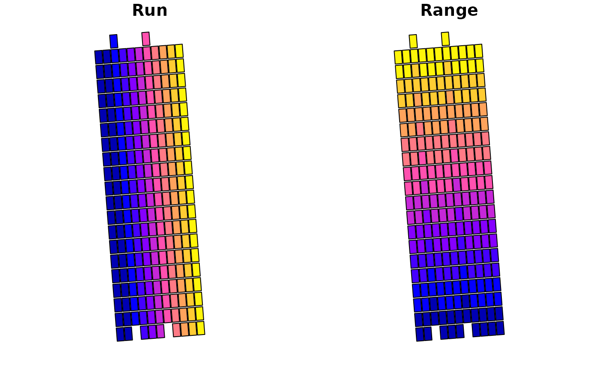

Move runs in your field experiment horizontally or vertically
Source:R/movePlotRuns.R
movePlotRuns.RdUsers can select a subset of runs or all runs
Arguments
- sf_obj
A sf object of geometry POLYGON or MULTIPOLYGON with Run and Range columns
- moveDirection
Direction of the move in reference to Run 1 Range 1. Takes "up", "down", "left" or "right" as inputs.
- moveDistance
Numeric value in meters to move
- runSelection
Integer value or a vector of a subset of runs or all runs. Default is all ranges.
Details
Move distance is in unit meters
Move direction is in relation to the position of Run 1 and Range 1
Move plots in your field experiment
Examples
dat <- read_input_dat(cornersData, 4326, 28355)
dat_plots <- corners_to_plots(dat, 80, 24.2, 11, 20)
#> [1] "make sure the orientation is correct!!"
dat_plots_RR <- addRunRange(dat_plots, "BL", 11, 20)
moved_plots <- movePlotRuns(dat_plots_RR, "up", 4, c(3,7))
plot(moved_plots)
